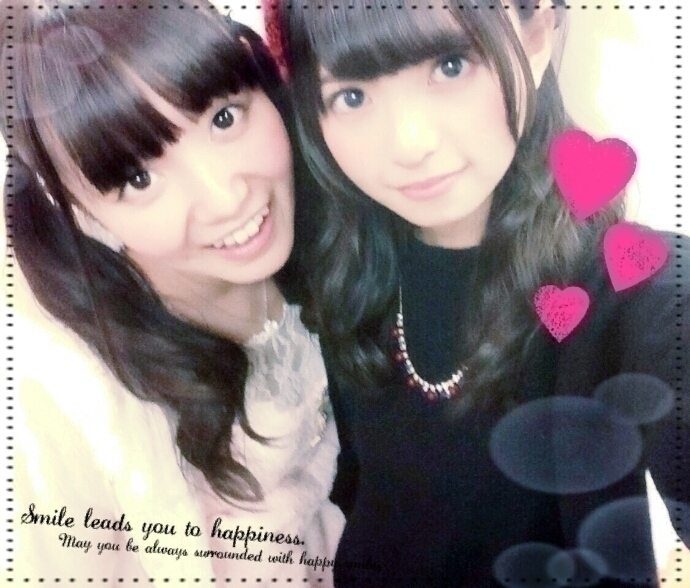

| 2014/12 28 Sun | ひめたん-OoO-その508 |
メリークリスマス！

みなさん今年のクリスマスは
すてきな思い出できた(＊´v`＊)？
日記のコメントで
教えてくれてるひともいて
ありがとうね～
生写真、ライブ、握手会と
今年もたくさんサンタ服着たなあ
ひめのクリスマスは
イブは さゆ・万理華と温泉へ！
都会の雑踏を忘れようと
電車でちょっと長旅したんだよ～
3人とものんびりまったりしてるから
電車の乗り換え間違えそうになったり
途中で売店に寄り道したりして......♪
ペースが似てる2人とだから
とっても居心地が良くて(﹡ˆoˆ﹡)
クリスマスはお仕事でした～
真夏と2人でお話したよ♡
これについては
情報解禁をお楽しみに( ˇωˇ )

のぎ天次回ゴルフ部だよ～
ゴルフ部頑張ってるよ( ^o^ )
少しずつでも上達しなければ......！
握手会でよく
ゴルフトークするけど
日記読んでくれてる人の中にもいるかな？
ゴルフやってるひとー？？
それから、 STREETJACKさんに
取材していただきました！
最新号に載ってます( ^o^ )☆
ひめは大好きな7thの制服を着て
3年間を振り返ったりしてます～
他にも乃木坂のメンバー
たくさん載ってるよ
よろしくね♪

明日は京都個握！
今年最後の握手会～
年の瀬の忙しい時期なのに
会いに来てくれてありがとう！
楽しみにしてるね⊂( ˆoˆ )⊃
最近はみんな優秀だけど
明日もお寝坊厳禁だからね？♡
30日は感謝祭！
初のモバイル会員様限定イベント
ライブとは違った形式でやるから
どんな感じになるんだろう～
いろんな企画盛りだくさんだから
来てくれるひとは楽しみにしててね♡

 きのうみり愛のとこ行って、びーむを
きのうみり愛のとこ行って、びーむを
お願いしたら、"お姉ちゃんのだから"
ってしてもらえなかった(T^T)
ひめたん許可してよー。
わーかわいい(´｡･v･｡｀)
さっすが私の妹はデキる子です！
EX大衆の最新号の中で私たちのコンビ
「すだれ姉妹」になりました～
内輪でずっとそう呼んでたんだけどね♡
新衣装って・・・何の???
あーごめんごめん(´・ω・｀)
クリスマスショーからの新衣装！
かわいいよね～この衣装好き♡
ひめたんの選ぶ
2014年No.1アニメは何ですか？
うーん難しいなあ
ノーゲーム・ノーライフ
月刊少女野崎くん
僕らはみんな河合荘
かなあ(＊´v`＊)
たんひめが使ってるグロス
教えてほしいです♡♡
JILL STUARTです\( ˆoˆ )/
おそろっちしよ～
おにゃのこは"たんひめ"って
呼んでくれる子が多い気がする♡
"たんひめ"の名付け親は愛未ちゃんだよ～
ひめたんに
ファンレター送りたいんだけど、
どーやって送ればいいのかな？
リボンもプレゼントしたい
わーありがとう( ´•̥ω•̥` )うれしい～
〒102-8353
東京都千代田区六番町4番地5
「乃木坂46運営事務局」宛
まで送ってください♡
ひめたん46は
今日はおやすみさせてください( >_< )
いつもたくさんのコメント
ありがとうございます～
コメントしてくれてる名前を
握手会で教えてくれたり
名札作ってくれてたりすると
わ♡って思うの(﹡ƠωƠ﹡)んふ
もうすぐ2014年が終わっちゃう！
みんな、今年はどんな一年だった？
乃木どこ、のぎ天、乃木のので
面白かった場面とか
あのライブよかった！とか
なんか教えてほしいな( ˇωˇ )
ひめは京都から帰ったら
ひとりでおとなしく
今年の反省会でもしようかな......。
(＊´・ω・＊)
コメント(869)
2014/12/28 00:30